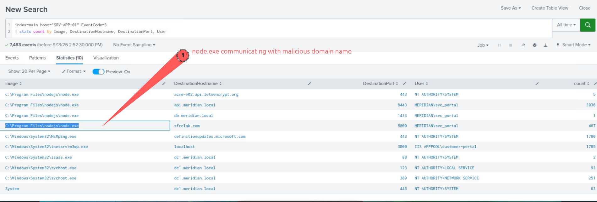
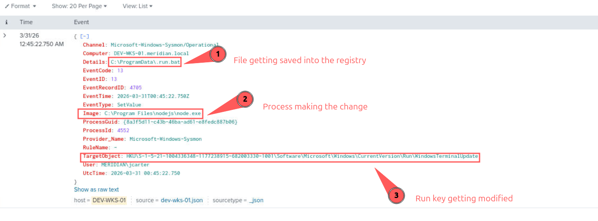

// CTF · WRITEUP
BadImport CTF
Executive Summary & Overview
This CTF writeup details an investigation into a multi-stage attack chain involving initial compromise, persistence, lateral movement, and privilege escalation across several systems within the Meridian network. The attack began with the compromise of DEV-WKS-01, where a renamed PowerShell binary (wt.exe) was used to establish C2 communication and deploy a malicious script. The attacker then established persistence via a Run key modification and harvested credentials.
Leveraging stolen credentials, the attacker moved laterally to BUILD-01, a Jenkins build server, where they enumerated systems, modified build scripts, and employed timestomping to conceal their activities. A malicious plugin (telemetry.js) was deployed and then transferred to the production application server, SRV-APP-01, via SMB. On the production server, the attacker escalated privileges using a named pipe and established further persistence through a new service, ultimately leading to the production server beaconing out to the attacker's C2 infrastructure.
Asset Information
| Hostname | Summary |
|---|---|
| SRV-APP-01.meridian.local | Production Application Server |
| BUILD-01.meridian.local | Jenkins Build Server |
| DEV-WKS-01.meridian.local | Developer Workstation |
| sfrlak.com | Proven Malicious on VirusTotal lookup |
Indicators of Compromise (IOC) Matrix
| Type | Summary | MITRE ATT&CK Code |
|---|---|---|
| Persistence |
C:\Program Files\nodejs\node.exe on DEV-WKS-01.meridian.local modified WindowsTerminalUpdate run key HKU\S-1-5-21-1004336348-1177238915-682003330-1001\Software\Microsoft\Windows\CurrentVersion\Run\WindowsTerminalUpdate
|
T1547.001 |
| C2 Communication |
DEV-WKS-01.meridian.local with image C:\ProgramData\wt.exe making outbound connections to public IP sfrclak.com, 142.11.206.73:8000 on account jcarter
|
T1071.001 |
| Powershell Execution |
"C:\ProgramData\wt.exe" -NoProfile -ep Bypass -File C:\Users\jcarter\AppData\Local\Temp\6202033.ps1 with ParentCommandLine C:\Windows\system32\cmd.exe /c "C:\ProgramData\.run.bat"
|
T1059.001 |
| Malicious File Creation |
C:\Users\jcarter\AppData\Local\Temp\6202033.ps1 created by C:\Program Files\nodejs\node.exe
|
T1105 |
| Lateral Movement |
jcarter uses WinRM (port 5985) from DEV-WKS-01.meridian.local to BUILD-01.meridian.local
|
T1021.006 |
| Credential Access |
Reg query performed on "HKCU\Software\SimonTatham\PuTTY\Sessions"
|
T1552.001 |
| Staging Data |
The .ps1 file begins copying data from "C:\Users\jcarter\AppData\Roaming\npm\.npmrc", "C:\Users\jcarter\AppData\Local\Google\Chrome\User Data\Default\Login Data", "C:\Users\jcarter\.aws\credentials" and staging them in C:\Users\jcarter\AppData\Local\Temp\
|
T1074.001 |
| Suspicious Transfer |
C:\Windows\system32\Robocopy.exe "C:\Jenkins\workspace\customer-portal\dist\customer-portal" "\\SRV-APP-01\c$\inetpub\customer-portal" /MIR /R:1 /W:1 - SMB transfer from BUILD-01 to SRV-APP-01
|
T1021.002 |
| Initial Access |
DEV-WKS-01 makes connection to sfrclak.com over port 8000 using C:\ProgramData\wt.exe
|
T1071.001 |
| Lateral Movement |
jcarter from devs-wks-01 logs into svc_jenkinsdeploy on build-01.meridian on eventcode 4648
|
T1078.002 |
| Enumeration |
Upon logging in as svc_jenkinsdeploy on BUILD-01, attacker enumerates Domain admins, host name, build.bat for credentials
|
T1087.002, T1082, T1083 |
| Timestamp Modification |
svc_jenkins modified timestamps for app.js and build.bat. This is known as Timestomping
|
T1070.006 |
| Lateral Movement |
telemetry.js from BUILD-01 gets copied over to SRV-APP-01 in the customer portal plugins
|
T1021.002 |
| Privilege Escalation |
User svc_portal using svc_helper.exe created a named pipe called spoolss
|
T1055 |
| Persistence |
CommandLine: sc create WinTelemetrySvc binPath= "C:\ProgramData\WinTelemetry\svc.exe" start= auto. New service created with weird binary set to execute on startup
|
T1543.003 |
| C2 Beaconing |
SRV-APP-01 begins communicating with Threat Actor's c2 server over port 8000
|
T1071.001 |
Step-by-Step Investigation Workflow
Initial search for suspicious PowerShell execution on DEV-WKS-01.
index=main Channel="Microsoft-Windows-Sysmon/Operational" Computer="DEV-WKS-01.meridian.local" EventID="1" CommandLine IN ("*-enc*", "*hidden*", "*bypass*") earliest="03/31/2026:00:45:22"| sort + UtcTime
Identifying outbound connections and destination ports from jcarter on DEV-WKS-01.
index=main Channel="Microsoft-Windows-Sysmon/Operational" EventID="3" User="MERIDIAN\\jcarter" | sort + UtcTime | eventstats count by DestinationPort| table UtcTime, DestinationPort, count, DestinationIp, DestinationHostNameInvestigating processes related to the temporary directory used for staging.
index=main (CommandLine="*C:\\Users\\jcarter\\AppData\\Local\\Temp\\*" OR ParentCommandLine="*C:\\Users\\jcarter\\AppData\\Local\\Temp\\*" OR CurrentDirectory="*C:\\Users\\jcarter\\AppData\\Local\\Temp\\*")| table _time, User, CommandLine, ParentCommandLine, CurrentDirectory
Searching for command execution related to Jenkins build scripts on BUILD-01.
index=main Computer="BUILD-01.meridian.local" earliest="03/31/2026:00:45:23" (EventCode="1" OR EventCode="4688") Image="C:\\Windows\\System32\\cmd.exe" CommandLine="C:\\Windows\\system32\\cmd.exe /c type C:\\Jenkins\\workspace\\customer-portal\\build.bat" User="MERIDIAN\\svc_jenkinsdeploy"
Identifying SMB transfers from BUILD-01 to SRV-APP-01.
index=* sourcetype=_json EventCode="3" host="BUILD-01" DestinationHostname="SRV-APP-01.meridian.local"Discovering named pipe creation events for privilege escalation or persistence.
index=main (EventCode=17 OR EventCode=18)Question & Answer Solutions
Q1. Which workstation first contact the attacker's command-and-control server? Provide the Workstation, the destination IP, and the destination port.
A1. DEV-WKS-01, 142.11.206.73, 8000
(Identified through Sysmon EventID 3 logs showing outbound connections to a known malicious IP.)

Q2. From which working directory did the attacker's first payload execute on the workstation?
A2. C:\ProgramData\
(The renamed binary wt.exe executed from this non-standard location.)
Q3. The attacker placed a renamed Windows binary in a non-standard location. What is the actual file? As per description.
A3. wt.exe (renamed PowerShell)
(The description and command lines indicate a renamed PowerShell executable.)
Q4. What is the full path of the script file the attacker dropped on the workstation as the first stage of execution?
A4. C:\Users\jcarter\AppData\Local\Temp\6202033.ps1
(Found in Sysmon EventID 1 logs showing process creation with the PowerShell command line.)
Q5. A persistence mechanism was established by the Attacker? Provide the registry path written, and the value content.
A5. Path: HKU\S-1-5-21-1004336348-1177238915-682003330-1001\Software\Microsoft\Windows\CurrentVersion\Run\WindowsTerminalUpdate, Value: C:\ProgramData\.run.bat
(Discovered by searching Sysmon EventID 13 for registry modifications to Run keys.)

Q6. The attacker collected several files containing user credentials and secrets from the workstation. Provide the file name (in alphabetical order)(Dot file being the first).
A6. .tmp, a, h, k, ld, n
(Identified by analyzing file creation events (Sysmon EventID 11) in the staging directory.)
Q7. Attacker then laterally moved to next machine. What is the machine and which account was used?
A7. Machine: BUILD-01, Account: svc_jenkinsdeploy
(Found by searching for explicit logon events (EventID 4648) originating from DEV-WKS-01.)
Q8. At what date and time did the attacker Logged into the next machine?
A8. 2026-04-02, 19:35:48
(Timestamp associated with the EventID 4648 logon event.)
Q9. On the recently compromised host, the attacker planted a file and modified an existing build script in the Jenkins workspace. To lower the suspicion they forged a creation timestamp on one of them, what fake timestamp value was applied?
A9. 2026-04-03 08:17:30
(Identified by comparing CreationUtcTime and PreviousCreationUtcTime in Sysmon EventID 2 logs.)
Q10. A new file appeared under the customer-portal application's plugins folder. Provide its full path?
A10. C:\Jenkins\workspace\customer-portal\plugins\telemetry.js
(Discovered by searching for file creation events within the Jenkins plugins directory on BUILD-01.)
Q11. What is the name of the file transferred from BUILD-01 to SRV-APP-01?
A11. telemetry.js
(Identified from Robocopy command line and SMB transfer logs.)
Q12. The attacker escalated privileges on the production server. Provide the full path of the binary used for the escalation, and the named pipe associated with the abuse.
A12. Binary: C:\ProgramData\WinTelemetry\svc.exe, Named Pipe: spoolss
(Found by correlating named pipe creation events (Sysmon EventID 17/18) with process execution on SRV-APP-01.)
Q13. The attacker achieved persistence on the production server. Provide the name of used/registered for that.
A13. WinTelemetrySvc
(Discovered by analyzing service creation events and associated command lines.)
Key Takeaways & Security Insights
-
Living Off The Land (LoTL) Binaries: The use of
node.exe(or a renamed PowerShell likewt.exe) to execute malicious scripts highlights the importance of monitoring legitimate binaries for anomalous behavior, especially when executed from non-standard paths or with suspicious arguments. -
Sysmon EventID 13 for Registry Monitoring: Sysmon EventID 13 is crucial for detecting persistence mechanisms involving registry modifications, particularly to Run keys. The
Detailsfield provides the exact value inserted, which is vital for forensic analysis. -
Proactive Threat Intelligence: Performing OSINT lookups on suspicious IP addresses (like
142.11.206.73) early in an investigation can significantly accelerate threat identification and confirm malicious intent. - Lateral Movement Detection: Monitoring explicit logon events (EventID 4648) and remote service connections (e.g., WinRM, SMB) is critical for detecting lateral movement, especially when service accounts are used from unexpected sources.
-
Timestomping as Evasion: Attackers use techniques like timestomping (Sysmon EventID 2 showing
CreationUtcTimevsPreviousCreationUtcTime) to blend malicious files with legitimate ones, emphasizing the need for robust file integrity monitoring and detailed timestamp analysis. - Supply Chain Attack Vector: Modifying build scripts and deploying malicious plugins in a Jenkins environment demonstrates a potential supply chain attack vector, where compromised build systems can distribute malware to production environments.